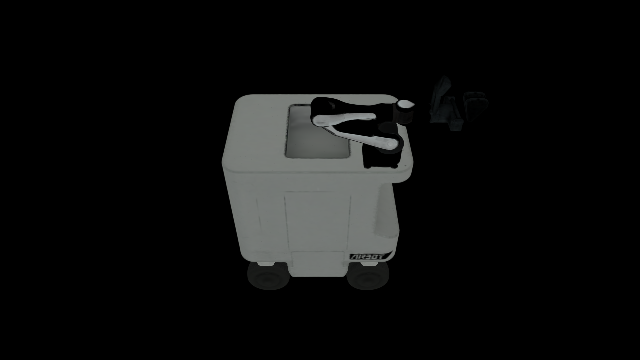
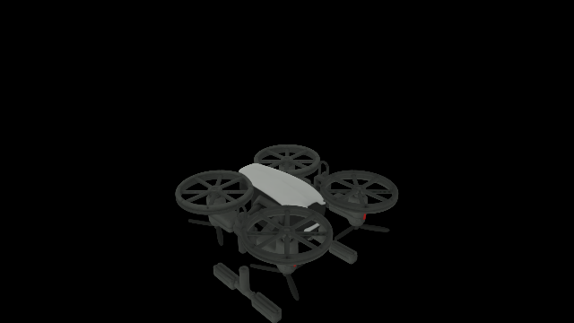

AMD Radeon + ROCm · 实测证据更新至 2026-08-03
从家庭仿真到移动操作
RoboCasa365 本身就是移动操作基准。我们以官方 PandaOmron 任务为主线，把底盘、机械臂、失败恢复和 AMD 性能证据接入同一条可审计闭环；SmolVLA 已完成同一 checkpoint 的 3×50 正式移动评估，0/150 的负结果与环境门禁严格分开。
AMD Physical AI · 完整比赛展示片
4:20 master
正式结果 固定协议、完整分母、结果文件已校验
诊断结果 真实闭环，但仅用于定位问题
进行中 不提前声明成功率
00 / FLAGSHIP
主线：RoboCasa 移动操作
RoboCasa365 的官方移动任务就是主线：先冻结家庭基线，再用 PandaOmron 接入导航、接近、抓取、运输和失败恢复。AMD395 已通过 reset、动作、多视角渲染、数据审计和 5000 步 SmolVLA 训练；同一 checkpoint 的正式 3×50 闭环结果为 0/150，作为真实诊断证据公开。
PRIMARY SHOWCASE · 4:20 · BILINGUAL
成功案例先行，失败证据收尾
主片按 DexJoCo、RoboCasa365、DISCOVERSE、3DGS、AMD 指标和失败附录展开；配有英文女声与原创氛围音乐，并提供中文、中英双语版本与 SRT 字幕。
DexJoCo · Pi0.5 · JAX 0.10灵巧手成功案例
DISCOVERSE · AMD · 3-view高清柜门操作回放
01 / PROJECTS
八条互相补强的实验线
从教学型单任务复现，扩展到多仿真器、标准基准、创意操作与设备性能证据。
正式移动评估
RoboCasa · 移动操作主线
RoboCasa365 本身就是移动操作基准。官方 PandaOmron 环境已在 AMD395 上通过 reset、12 维动作契约、三相机渲染和数据审计；SmolVLA 以 state16/action12 训练 5000 步，并用同一 checkpoint 完成三个任务各 50 回合的正式评估。真实结果为 0/150，失败视频和评估摘要已公开。
- data
- 1503 eps
- action
- state16 / act12
- eval
- 0 / 150
正式结果
RoboCasa365 · 16 任务
AMD 395 上使用同一任务集合、每任务 50 回合和视频开启协议，对齐 Pi0.5 与 GR00T。
- GR00T 120k
- 230 / 800
- Pi0.5 75k
- 142 / 800
- 视频
- 1,600
迁移完成
DISCOVERSE · 全链迁移
覆盖运行、专家轨迹、训练、闭环评估和 MP4 输出；同时保留学习策略 0% 的真实负结果。
- Runtime
- 18 / 18
- AIRBOT
- 12 / 12
- Expert data
- 500 eps
控制路径验证
PAC-MAN · 感知 CBF-RL
将上游预测性 CBF 安全逻辑拆出，在 AMD ROCm Torch + MuJoCo 上复现控制路径；明确区分代理场景安全回合与上游 G1 AMP 成绩。
- proxy
- 12 / 12
- views
- 2
- backend
- ROCm + MuJoCo
多任务已评估
DexJoCo · Pi0.5 原生 JAX
在 AMD ROCm 上用 JAX 0.10 原生恢复官方 Orbax 权重，完成单任务诊断和官方 multi-task 评估；保留固定 seed 与恢复搜索的不同口径。
- 官方任务
- 5 / 11
- 诊断任务
- water_plant 4/4
- 恢复搜索
- 10 / 11
正式评估
RoboWits · 创意操作
W7900 上按官方 16D ACT 配置完成 100k 训练和四任务闭环；保留真实低成功率、录像与 checkpoint SHA。
- checkpoint
- 100k
- 高清评估
- 2 / 20
- 成功任务
- 06 dominos
权重就绪
LIBERO · 标准基准
SmolVLA 与 DiT4DiT 公开权重已完成校验，正式评估排在 RoboWits 协议完成之后。
- SmolVLA
- 0.91 GB
- DiT4DiT
- 21.28 GB
- 成绩
- 待评估
设备证据
AMD 双设备实验室
本地 Ryzen AI MAX+ 395 负责稳定长评估，云端 Radeon Pro W7900 负责大显存训练与迁移验证。
- AMD 395
- RoboCasa
- W7900
- RoboWits
- 栈
- PyTorch + JAX
RoboWits 结果为 2026-08-01 W7900 官方 100k checkpoint 的四任务 × 5 回合闭环；06_dominos=2/5，其余 14、19、25 均为 0/5。
02 / BENCHMARK
RoboCasa365 同协议逐任务对比
GR00T 28.75%
Pi0.5 17.75%
GR00T N1.5 · official 120k
230 / 800
Pi0.5 · official 75k
142 / 800
| 任务 | GR00T | Pi0.5 | 差值 |
|---|---|---|---|
| 正在读取已校验结果… | |||
02B / LONG-HORIZON SHOWCASE
GR00T 长程恢复展示
AMD 395 上使用 GR00T N1.5 多任务权重，每个任务 10 回合、四视角录像；这是补充展示，不改正式 16 任务 × 50 episodes 的分母。
SteamInMicrowave · 10 episodes
failure-only无成功 · 0 / 10
RestockBowls · 10 episodes
success成功案例 · 2 / 10
PackIdenticalLunches · 10 episodes
success成功案例 · 3 / 10
PrepareCoffee · 10 episodes
failure-only无成功 · 0 / 10
视频为网页预览压缩版；原始四视角 1920×1080@20fps 文件和四个结果 JSON 保留在 AMD395 归档目录。PrepareCoffee 的官方 16×50 评估也是 0/50；本页不把额外展示结果写入正式成绩。
02C / DISCOVERSE SHOWCASE
DISCOVERSE 高清三视角回放
同一套 AMD 迁移后的官方 MMK2 专家状态机；每条展示包含 cam_0、cam_1、cam_2 三路原生 1920×1080 录像，网页视频为三视角合成画布。
DISCOVERSE · MMK2 · 3-view · 1920×1080
success盒子抓取 · strict success
DISCOVERSE · MMK2 · 3-view · 1920×1080
success抽屉打开 · strict success
DISCOVERSE · MMK2 · 3-view · 1920×1080
success柜门打开 · strict success
DISCOVERSE · MMK2 · 3-view · 1920×1080
success杯子放盘 · strict success
每个合成视频的三个画面来自同一回放时间轴；每个面板对应一条原生 1920×1080 相机录像。这组视频是展示证据，不改训练数据、策略评估或正式分母。
02D / 3DGS RENDERER
ROCm 上的 Gaussian Splatting 真实渲染
这组证据展示的是 renderer 是否真正加载高斯点并产出画面；它与策略成功率分开统计，不把一张静态图包装成闭环成绩。

GSRendererMuJoCo · ROCmRM2 · 1,334,537 points
640×360
GSRendererMuJoCo · ROCmSkyRover · 1,026,855 points
640×360DYNAMIC EVIDENCE
20 fps · 4 s · 原始视频动态回放：Franka 与 UR5e
3DGS example · FrankaROCm renderer 动态回放
3DGS example · UR5eROCm renderer 动态回放
2 个 renderer 验收目标、2 张非空验证帧和 2 段动态视频均来自本地 AMD 迁移证据；3DGS 验证回答“渲染链路是否成立”，DISCOVERSE 专家任务视频回答“任务是否完成”。
03 / SUCCESS EVIDENCE
先看成功案例
DexJoCo · Pi0.5 native JAX 0.10 · 单任务诊断
successwater_plant · seed 0 成功
RoboWits · ACT 100k · W7900 · ego view
success06_dominos · episode 1 成功 · 848×480
Every Embodied · SmolVLA
success红杯严格成功
RoboCasa365 · GR00T · 4-view showcase
successCloseFridge 成功 · 1920×1080
RoboCasa365 · Pi0.5
successDrawerToCounter 成功
DISCOVERSE · Expert
successBlock bridge 严格回放
03 / DEXJOCO MULTI-TASK
10 / 11 找到成功 seed
Pi0.5 成功案例清单
同一套官方 multi-task 权重在 AMD ROCm JAX 0.10 上评估。正式口径固定 seed 0 为 5 / 11；额外恢复搜索只在原失败任务上使用固定 seed 1–10，找到首个成功后停止，不改写正式分母。10 个成功任务各保留一条网页主视角视频，另保留一条 water_plant 单任务诊断视频。
Official protocol · seed 05 / 11
正式多任务成绩，成功：click_mouse、fold_glasses、hammer_nail、pick_bucket、pinch_tongs。
Recovery search · seeds 1–1010 / 11
展示可复现的首个成功 seed；bimanual_unlock_ipad 在 seed 0–10 均未找到成功。
| Task | Official seed 0 | Recovery seed | 网页媒体 |
|---|---|---|---|
| bimanual_assembly | 0 / 1 | seed 3 | 播放恢复成功 |
| bimanual_hanoi | 0 / 1 | seed 4 | 播放恢复成功 |
| bimanual_microwave_cook | 0 / 1 | seed 1 | 播放恢复成功 |
| bimanual_photograph | 0 / 1 | seed 3 | 播放恢复成功 |
| bimanual_unlock_ipad | 0 / 1 | seed 1–10: 0 | 无成功案例 |
| click_mouse | 1 / 1 | — | 播放官方成功 |
| fold_glasses | 1 / 1 | — | 播放官方成功 |
| hammer_nail | 1 / 1 | — | 播放官方成功 |
| pick_bucket | 1 / 1 | — | 播放官方成功 |
| pinch_tongs | 1 / 1 | — | 播放官方成功 |
| water_plant | 0 / 1 | seed 2 | 播放恢复成功 · 诊断 |
SUCCESS VIDEO ARCHIVE
官方 seed 0 + recovery 首成功 seed10 个成功任务，各一条主视角录像
official · seed 0click_mouse
official · seed 0fold_glasses
official · seed 0hammer_nail
official · seed 0pick_bucket
official · seed 0pinch_tongs
recovery · seed 3bimanual_assembly
recovery · seed 4bimanual_hanoi
recovery · seed 1bimanual_microwave_cook
recovery · seed 3bimanual_photograph
recovery · seed 2water_plant
04 / PIPELINE
同一条可审计闭环
- 01仿真环境RoboCasa · MuJoCo · DISCOVERSE
- 02专家与数据fixed seed · LeRobot · audit
- 03AMD 训练SmolVLA · Pi0.5 · GR00T · ACT
- 04闭环评估denominator · success/failure videos
- 05证据归档JSON · SHA256 · checkpoint
05 / REPRODUCE
先看成功，再完整训练
公开教程提供可直接运行的 Notebook、保护权重、配置、严格评估摘要和 SHA256。
99 / FAILURE LAB
最后再看失败与诊断
失败视频不参与首页主叙事，但会和结果 JSON、阶段统计和复现说明一起保留。
RoboCasa365 · GR00T · 4-view showcase
failureCloseFridge 失败
RoboCasa365 · Pi0.5
failureDrawerToCounter 失败
DISCOVERSE · Pi0.5 diagnostic
failure闭环策略失败样例
Every Embodied · SmolVLA
failure